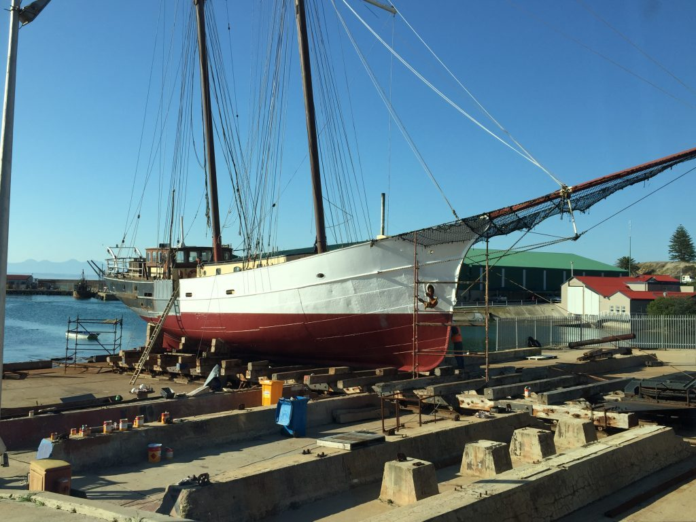
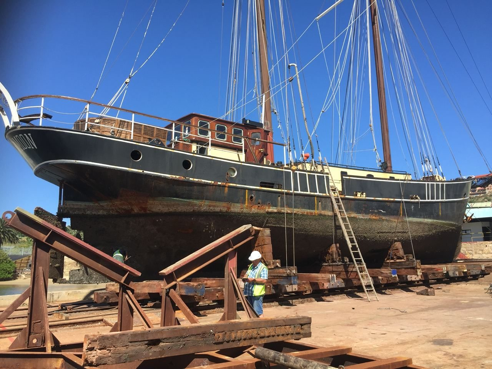
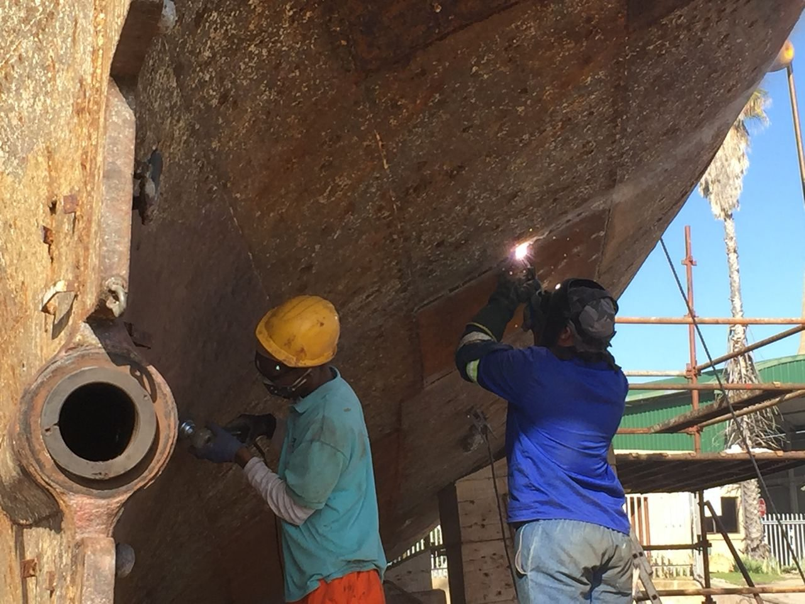
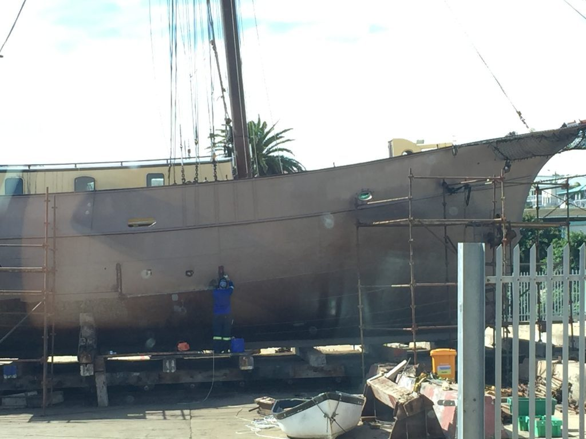
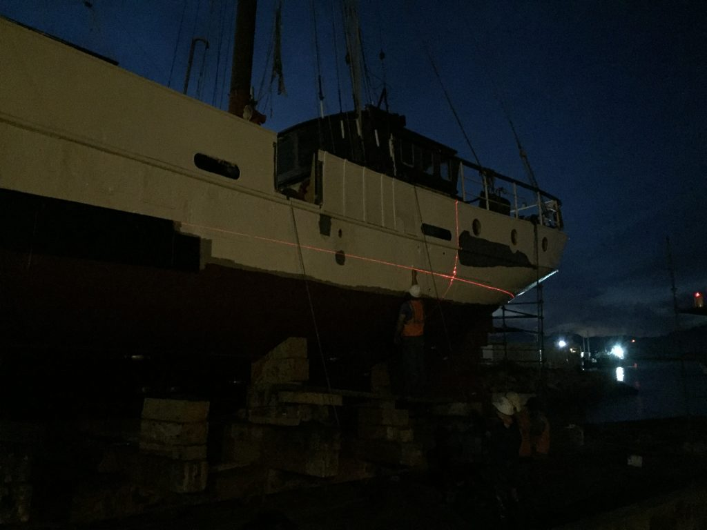
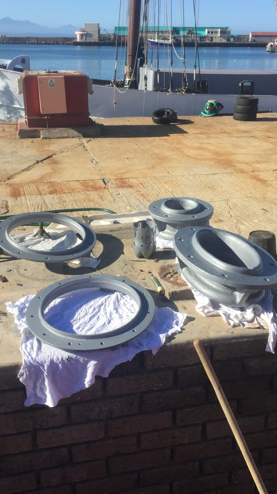

Bringing a 1910 schooner back to life.
How Luna Moon was hauled out, stripped back and rebuilt in Mossel Bay.
In 2019 Luna Moon sailed into Mossel Bay, on South Africa's south coast, for the biggest refit of her 110-year life. Her owners set out to keep as much of the original ship as they could: old timbers and fittings were repaired and reused wherever possible, and anything new came from sustainable sources.
This is how the crew and the shipyard brought her back.
Out of the water
Every hull is a different shape, so the wooden blocks that hold a ship upright on the slipway had to be set up just for her. The slipway trolley was rolled into the water, divers checked that the blocks sat snugly under her hull, and she was slowly drawn up onto dry land.

Once the safety officer had confirmed she was secure, the crew pressure-washed the hull to strip off years of marine growth. Marine surveyor Glenn Coulthurst then went over her inch by inch to mark everything that needed repairing or replacing.
After the repairs came the hardest, dirtiest job of all: grinding every patch of rust off the steel by hand, ready for paint.

500 litres of paint
Painting the hull took 32 days and around 500 litres of paint.
First came two coats of a tough epoxy primer that fills small dents and resists knocks. Each coat went on in a different colour, so nobody could miss a patch. The area around and below the waterline, which takes the most punishment, got a third coat. Next came a zinc-rich barrier coat to stop corrosion.

To get the waterline perfectly straight, the crew marked it with a laser at night, when the beam shows up clearly against the hull.

Then the topsides were painted white, and two coats of antifouling went on below the waterline to keep weed and barnacles off. With the paint cured, Luna Moon went back into the water for the work on deck and below.
Brass, yards and varnish
Much of her brass hadn't been touched in years. The crew stripped and polished every brass port light, and scraped off the paint a previous owner had used to cover some of them rather than keep them polished.

The yards, the wooden spars on the front mast that carry her square sails, were taken down and rebuilt. Their fittings were repaired or replaced, and each yard was sanded, primed and painted white.
Wherever wood had rotted, it was sanded back, the cracks were filled, and the timber was finished with six coats of marine varnish.
Below deck
All the while, work carried on in the engine room, the galley and the cabins. New timber is Knysna blackwood, an invasive tree cleared from South African forests. The shower curtains are cut from old Hobie Cat sails, and the glasses on board are made from recycled bottles.

Come and see the result.
Charter the whole ship for your family or friends.